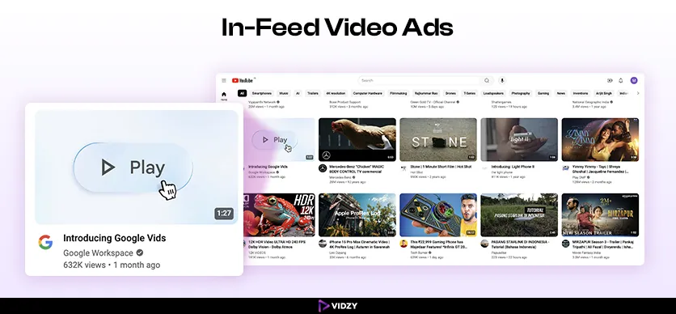
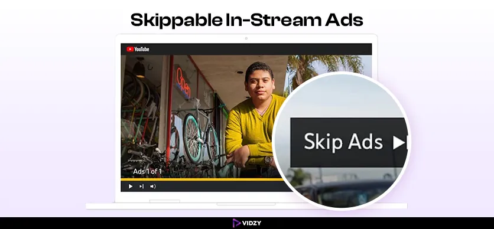
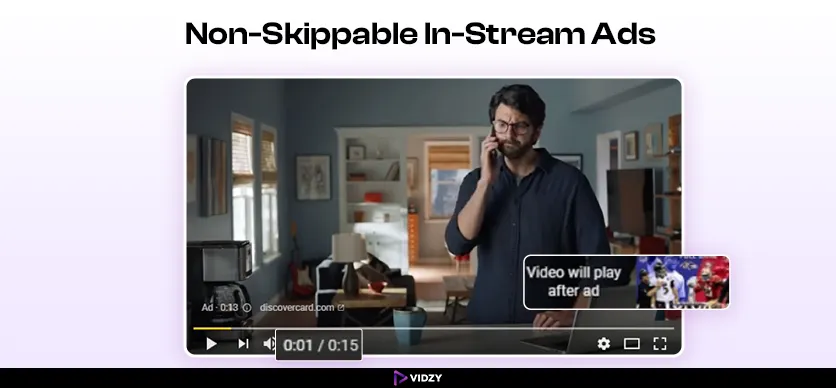
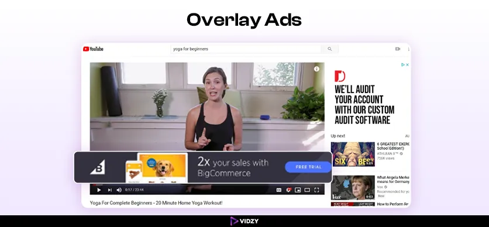
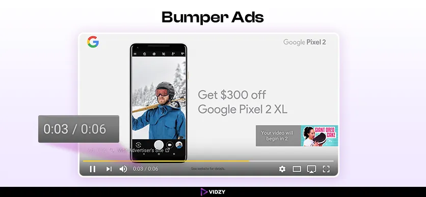

Amplify the exposure of your meticulously crafted top-quality videos—scripted, storyboarded, filmed, and edited—by utilizing the YouTube platform - a great method to reach your target audience.
Social media sharing and embedding videos on websites are just the beginning. With YouTube advertisements, you can target the people you want to see your videos instead of merely hoping they'll see them.
Yet, ever wished - how to create videos for YouTube ads that perform? Nowadays, numerous brands struggle in the video ads creation process. with time constraints when striving to develop high-quality video content. According to HubSpot, over 29% of marketers face difficulties in video production, filming/videography, and editing.
However, there is a silver lining; techniques are available to simplify the process and create alluring YouTube ads promptly. For making YouTube video ads result-oriented, there are some swift strategies to share brand messages with the target audience. But before detailing into creation, let's understand why YouTube ads are essential.
Contents
Benefits Of Using YouTube Video Ads For Businesses
As stated by the Digital 2024 Global Overview Report, with 2.49 billion subscribers, YouTube has a massive potential audience for ads. It's the second most popular social media platform, with half of the world's 5.04 billion members. The platform's popularity among social media users is evident from this. These advertisements have the potential for brands to adeptly connect, engage and convert their target demographic. Leveraging its extensive reach precise targeting options and immersive content structures, YouTube empowers businesses to accomplish their marketing objectives and build the way for growth amidst today's competitive digital market. Presenting the benefits of using YouTube video ads for businesses.
Elevating Engagement:
Adidas witnessed phenomenal success through their Nemeziz football shoe campaign. With the utilization of compelling TrueView video ads, captivating Bumper ads, and strategically curated video ad sequencing, the brand gained a 33% upsurge in brand recognition and achieved an extraordinary 317% spike in product interest. It exemplifies the vast potential encapsulated within YouTube ads!
Boosting Sales And Growth:
Making YouTube video ads proved beneficial in the case of United Airlines. The airline designed engaging 15-second YouTube commercials featuring picturesque vacation places to entice flight researchers to book. These ads used TrueView to drive visitors to the United Airlines website. Results were impressive: 17,000 flight bookings and 52% of YouTube conversions were direct ad clicks. Retargeting with well-crafted video ads and strong calls to action is seen in this campaign.
Maximizing Expansion And ROI:
To increase the sales of its products during the festival season when the market is overloaded with sweets, Hershey takes the help of influencers in YouTube video ads. With Bumper ads, brands endorsed their products, resulting in – a 551% increase in search and a 22% increase in purchase intent.
Massive Reach:
After establishing its roots in metropolises, leading brand Flipkart created YouTube ads to increase its reach in non-metro cities and establish its identity as “India Ka Fashion Capital.” Instead of slowly expanding its online presence, the company focused on Tier-2 and Tier-3 locations with substantial consumer growth from the start of the campaign. This tactic raised awareness and gave Flipkart early digital information that helped it personalize its approach in the coming weeks. Flipkart Fashion was fresh in customers' thoughts, thus the rest of the campaign drove outstanding contemplation and curiosity - a 27% increase in ad recall, 11% increase in purchase intent, 10% increase in brand recognition, 6% increase in brand awareness.
The success stories of brands illustrate the importance of video ads on YouTube. These ads provide an effective strategy for businesses, from increasing brand recognition and captivating audiences to boosting sales and expanding market reach.
Notably, each of the aforementioned brands used types of YouTube ads, such as a bumper, product ads, etc., to reach their target audience. Exploring the vast world of YouTube ads is a must for any successful brand.
Different Types of YouTube Ads To Drive Brand Sales
In-Feed Video Ads:

YouTube's in-feed video advertisements can be seen on many different pages and sections of YouTube, such as the homepage, search results pages, and video watch pages as related videos. These ads appear after a user searches on YouTube. A companion banner display ad is placed on the right-hand column of the destination video page that consumers are routed to when they click the ad. Commonly, CPV bidding is used to pay for these ads.
Unlike static images and text, in-feed video ads are highly visible, interactive, and easy to remember. Users may be inclined to share these captivating videos. Because of this, it may reach more people, which is great for building recognition for the business. However, some users scroll past these videos without even watching or actively try to avoid the ads by using ad-blocking software. Yet, in-feed video ads can help increase brand recognition by introducing users to the brand, its products, and its messaging in a visually compelling way.
Skippable In-Stream Ads:

Video ads on YouTube typically take the form of skippable in-stream ads. The only way for advertisers to make money off of these ads is if the user engages with them in some way, such as clicking a call-to-action (CTA) or watching the entire 30 seconds of the video. Target CPV, CPA, and CPM are the three ad bidding tactics available to advertisers. The minimum duration for skippable adverts on YouTube is 12 seconds and the maximum is 6 minutes. On YouTube, these types of YouTube Ads will play before the user sees the video they've chosen. Sometimes, after five seconds of watching the ad, viewers can choose to skip it.
Skippable types of YouTube Ads offer the flexibility for viewers to skip ads to reduce annoyance and potentially enhance brand perception. It improves targeting efficiency by giving brands the chance to engage with ad viewers who opt to watch the ad. However, in many cases, these ads can also result in lower completion rates and fewer opportunities for brand exposure if viewers skip the ad.
Non-Skippable In-Stream Ads:

Advertising that plays before, during, or after videos on YouTube and cannot be skipped is known as non-skippable in-stream ads. Viewers can watch these commercials on their whole before they can access the video content they want to watch. Usually, they're 15 or 30 seconds long. Non Skippable in-stream commercials make sure people watch the whole thing, unlike skippable ads that let them skip after a few seconds.
Non-skippable in-stream advertisements offer that audiences engage with the complete advertisement, maximizing the visibility of the brand and retaining the message effectively. Additionally, these ads are efficient in conveying precise and compelling messages within a specified timeframe. It may lead to viewer frustration and annoyance, potentially negatively impacting brand perception.
Overlay Ads:

Overlay ads appear as a semi-transparent overlay on top when a video plays on YouTube. These ads typically appear at the bottom of the video player and may include text, images, or a combination of both. These are clickable and when the user clicks, they can be directed to the advertiser's website or another destination specified by the advertiser. These advertisements are subtle and offer extra details or special offers associated with the video content, enhancing the viewing experience.
Overlay advertisements present a subtle method for showcasing supplementary details or promotions during a video, amplifying brand exposure and interaction. They feature interactive components that guide users to the sponsor's site or specific page, enabling direct engagement and possible conversions.
Bumper Ads:

Bumper ads those quick non-skippable snippets, lasting up to 6 seconds, that pop up before, during, or after YouTube videos. Amplification of the brand, improvement of ad recall, and advancement of brand awareness are the three main ways in which these advertisements step up their game.
Bumper advertisements are brief video ads that cannot be skipped, designed for brands to efficiently convey concise messages. It enhances brand visibility within a short period. These ads are budget-friendly and adept at swiftly capturing viewers' attention.
These are some of the most popular types of YouTube ads, the creation of which is essential for business in many ways. Let's come back to the topic and explore - How To Create Videos For YouTube Ads:
How To Create Compelling YouTube Video Ads
Nowadays, with all the digital technologies out there, getting the video noticed on YouTube can feel like competing fiercely. However, there are practical tactics - making compelling video ads. Learn how to create video Ads for YouTube for exceptional results:
Ideation And Planning:
To create YouTube video ads, it's crucial to solidify your foundation. Commence by outlining the campaign objectives – think about whether the aim is to elevate brand recognition, steer traffic to the website, or stimulate direct sales. Conduct in-depth market research on the demands and desires of the target audience in the following stage. This study aids in understanding the tone and messaging of the video advertisement. Lastly, keeping the audience at the forefront generates impactful ideas that utilize storytelling methods to deeply resonate with them. This preliminary planning phase plays a pivotal role in curating a YouTube ad that genuinely connects with the audience and yields outstanding outcomes.
Choose The Right Ad Format:
While moving forward in ad creation, understand the importance of YouTube's advertising toolbox. Explore the existing types of YouTube Ads. Choose brand videos to establish brand awareness and credibility; by giving information about products/services with Mini-Documentaries and Campaign Videos, inspire viewers to take action. Need a snappy high-impact message? Opt for Bumper ads, a 6 second burst of attention-grabbing content. The best format seamlessly aligns with your campaign's goals and budget. Analyze the objectives and resources to select the YouTube ad format that delivers impactful results.
Scripting And Storyboarding:
Making YouTube video ads that engage the target audience requires the integration of powerful screenwriting and storyboarding. First, formulate the script outlining, the dialogue narration, and any sound effects. This script acts as your roadmap, which ensures a coherent delivery of your message. Subsequently, generate a storyboard – a sequence of panels visually portraying each scene in the ad. Sketch out the composition of each shot, incorporating characters, props, and camera angles. This visual representation allows you to preplan the videography process and guarantee that each frame contributes effectively to conveying a brand message. By pairing a well-written script with clear storytelling, the brand will be fully prepared to shoot a polished and impactful YouTube ad.
Videography:
For elevating the quality of YouTube video production, consider the visual impact. Opt for suitable gear – a high-definition camera, lighting that enhances the subject, and high-quality audio recording tools for crisp sound. Choose professional studios and design sets that complement the brand message, creating visually stunning scenes. When filming, prioritize capturing top-notch footage that effectively showcases the product or service in the best light possible. This meticulous attention to detail will translate into a professional-looking ad that captures viewers' attention and keeps them engaged.
Video Editing Techniques:
After capturing the footage, commence the transformation process into a compelling advertisement. Arrange the clips either chronologically or thematically, carefully curating the best shots that bolster the narrative. The video editing software then serves as the canvas for creativity. Within this domain, the brand holds the ability to remove unnecessary sections, reorganize clips for a smooth storytelling flow, and enhance visual appeal with text overlays, graphics, and transitions. Remember the impact of these elements should not be underestimated – they possess the ability to illuminate the brand message, crucial points, and ultimately forge a meaningful connection with your audience.
Monitor And Optimize:
The journey doesn't end once your YouTube ad campaign goes live! It's crucial to continuously monitor its performance to get the desired result. Keep a close eye on essential metrics like view engagement levels (including likes, comments, and share) and most significantly conversion rates (such as purchases and sign-ups). This information acts like a guiding star. By scrutinizing these metrics, the brand gains the ability to make informed decisions aimed at optimizing the campaign. The true magic is in the adaptability – a brand has the freedom to adjust its ad style calls to action or even the entire video content based on real-time performance feedback. By continuously fine tuning, the YouTube ad campaign achieves its utmost potential effectively.
Professional Advice:
Creating effective video ads for YouTube has become straightforward and cost-effective when you are partnered with a professional video production company. They fit with your creative vision. For example, by connecting with Vidzy, one of India's best video production companies, it becomes possible to create sales-driven YouTube video ads. Well-established agencies like Vidzy follow its client-centric approach and have created successful video ads for 1000+ brands with 8+ years of experience. Through their expertise and resources, Vidzy can transform your ideas into impactful video content that promotes your products or services ultimately aiding you in achieving your marketing objectives on YouTube.
Conclusion:
Crafting high converting videos for YouTube ads necessitates a blend of creativity, technical prowess and strategic foresight. By diligently following this ultimate step-by-step guide, leveraging videography, and video editing techniques, and partnering with the best video production agency. You can curate impactful video ads to achieve marketing objectives.
Adopt the powerful arena of YouTube video ads to raise brand awareness and establish more in-depth relationships with customers.